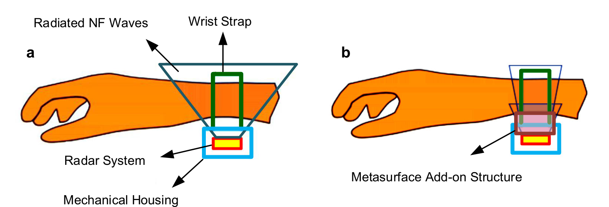
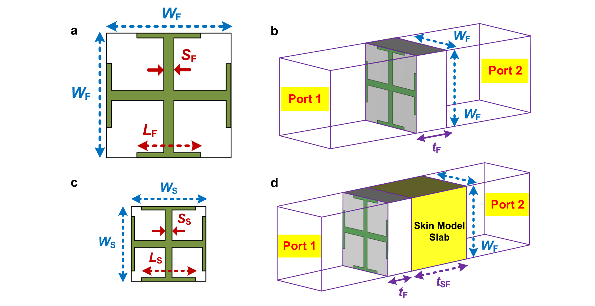
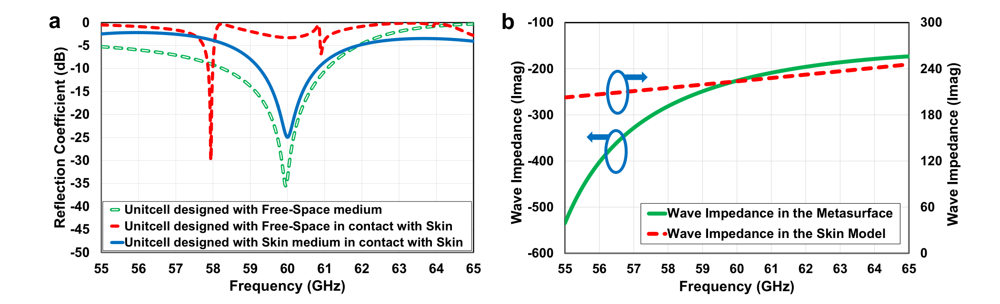
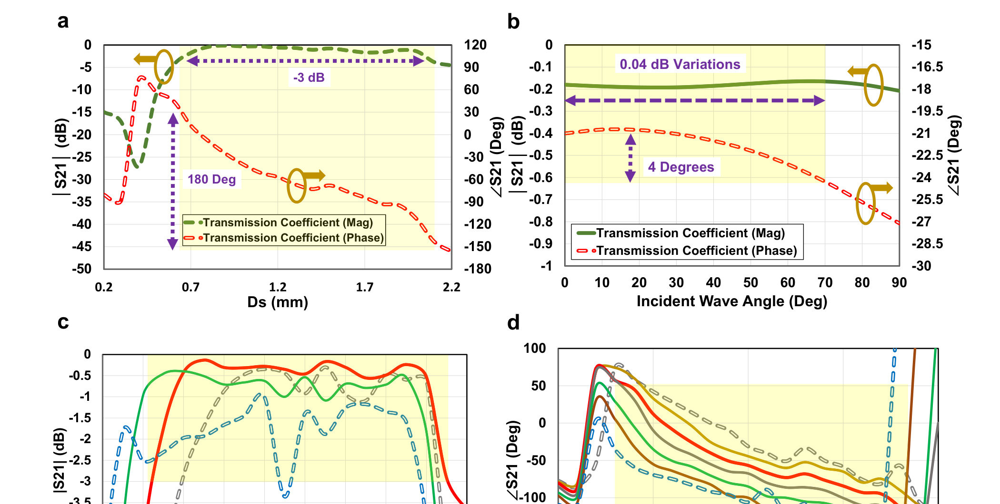
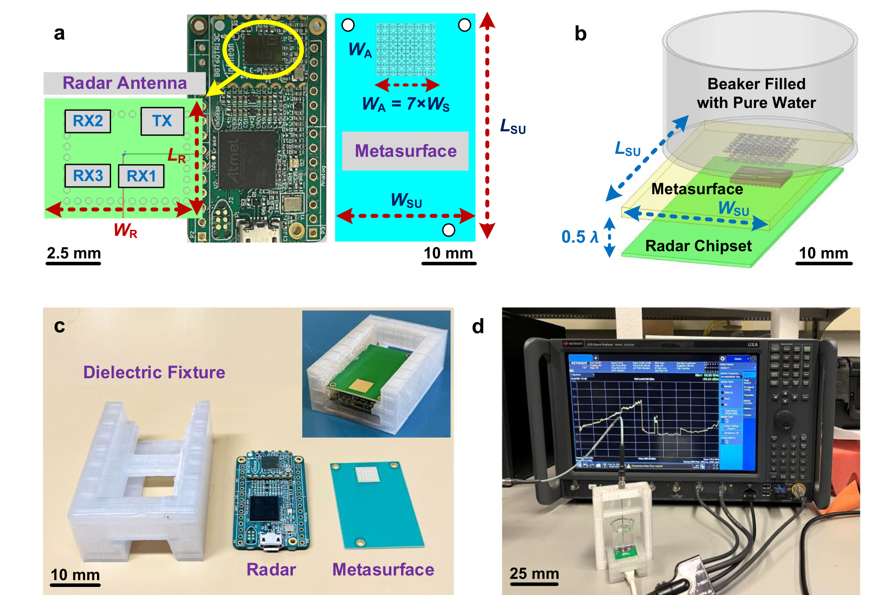
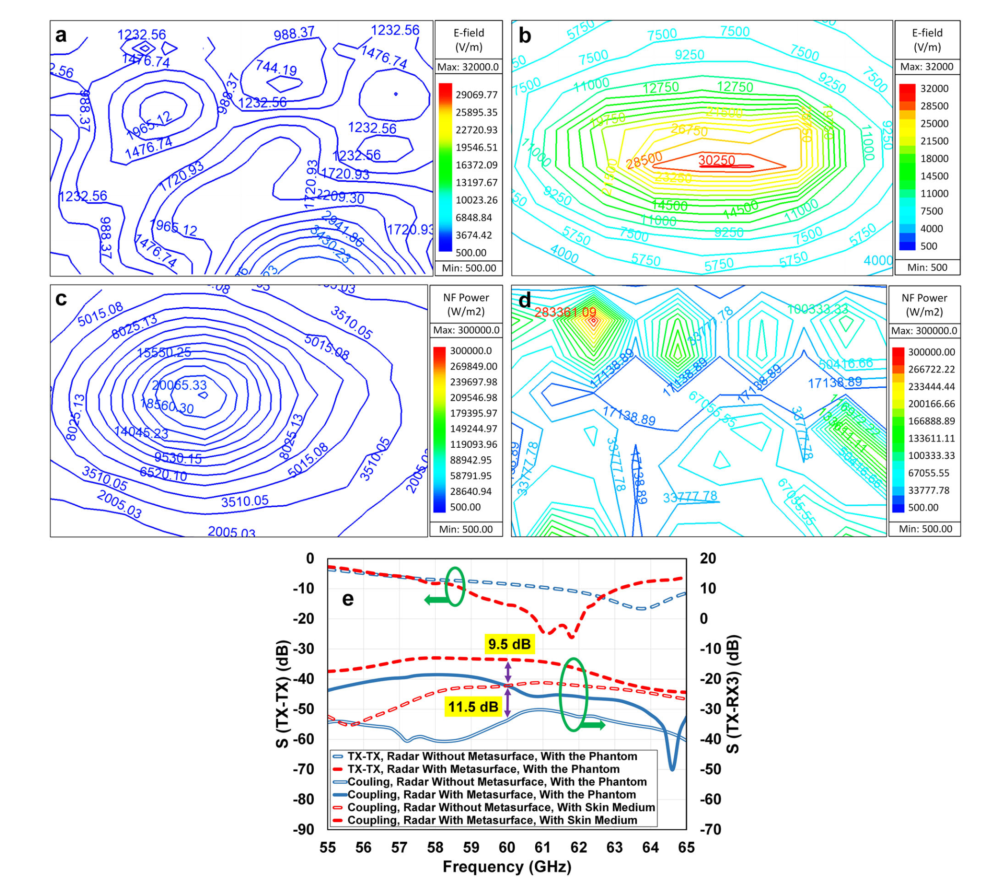
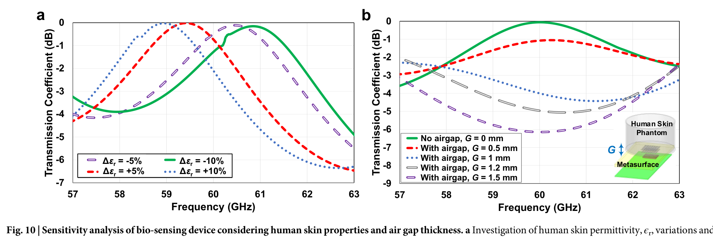
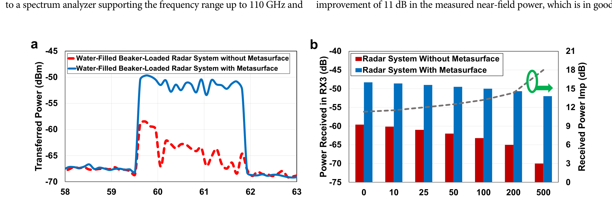

FIG. 1
系统思想：不是隔空测，而是在皮肤接口处改造电磁场
第一图定义了问题的位置：超表面被夹在腕戴雷达天线与皮肤之间，目标是让发射能量更有效地进入皮肤，并让皮肤信息更强地返回接收天线。

作者在商用毫米波雷达与皮肤等效介质之间放入一块 7×7 透射超表面，同时减少界面失配并让各单元在近场焦点同相叠加。水—玻璃仿体实验中，60 GHz 处的介质内功率和雷达回波均提高约 11 dB；但这仍是仿体中的硬件增益实验，不是人体无创血糖测量或临床诊断验证。
证据边界：论文为 CC BY 4.0；下列图片按原论文完整图体截取并用于公开研究解读，未附整篇 PDF。论文的实测对象是 Pyrex 烧杯 + 纯水/葡萄糖溶液仿体，而不是人体、血液或临床受试者。
它把超表面当成雷达与皮肤之间的“电磁耦合镜头”：一方面用为皮肤介电参数重新设计的交叉偶极单元做阻抗匹配，另一方面给 49 个单元分配空间相位，让 2.5 mm 外的雷达天线能量在介质内约 2 mm 处集中。核心贡献不是新的雷达算法，而是把匹配、聚焦和片上雷达集成放进一块约 7.7×7.7 mm² 的低剖面接口。
第一图定义了问题的位置：超表面被夹在腕戴雷达天线与皮肤之间，目标是让发射能量更有效地进入皮肤，并让皮肤信息更强地返回接收天线。

自由空间里好用的超表面，直接贴上高损耗皮肤后会被重新加载。作者因此把皮肤介质放进单元仿真，再缩小和调谐双层交叉偶极结构。

重新设计的单元在 60 GHz 附近恢复低反射；作者将其解释为超表面的容性虚部抵消皮肤模型的感性虚部。

双层单元只能在可接受损耗下提供约 180° 相位范围，因此作者在孔径大小、相位误差和带宽之间选择 7×7 阵列。

这张图把“腕表设想”落回真实实验：BGT60TR13C 雷达、3D 打印支架、超表面和装有 10 ml 纯水的 Pyrex 烧杯。

同一色标下，加入超表面后电场由零散分布变成集中焦斑；S 参数则把这种场增强连接到雷达可接收的回波。

设计对 ±5% 到 ±10% 的介电常数变化有一定容忍度，但一旦皮肤与超表面之间出现毫米级空气隙，匹配和焦点都会快速恶化。

最终实验复现了仿真的功率提升，并用水中不同葡萄糖浓度展示回波随浓度变化；这一结果只能说明增强后的雷达更容易分辨该仿体差异。

未展开的图：Fig. 2 给出近/远场路径增益与波阻抗基础；Fig. 3 用传输线等效模型解释自由空间—超表面—皮肤匹配；Fig. 6 比较 3×3、5×5、7×7、9×9 阵列的所需相位分布。它们服务于设计推导，核心实验结论由上面的 Fig. 8–11 承担。
← 返回论文细读书架